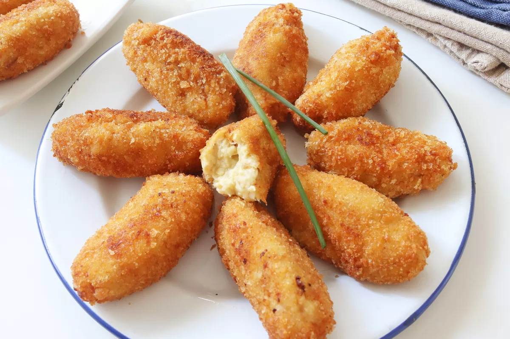

Croquetas de pollo

Descripción
Las croquetas lo tienen todo para triunfar, por eso es el plato favorito de tanta gente.
Son blanditas y cremosas por dentro a la vez que crujientes por fuera y doraditas.
En definitiva, son irresistibles. Y por si esto fuera poco tienen otro punto a su favor,
son económicas y una buena opción para aprovechar en este caso, los restos de un asado
o guiso de pollo.
Su elaboración puede asustar un poco a los cocineros principiantes, pero como siempre,
si se siguen los pasos de esta receta de manera fiel a las indicaciones, nada tiene por
qué fallar y acabaremos con unas croquetas para presumir, mucho mejores que las compradas.
Ingredientes
- 50g de mantequilla
- 200g de cebolla
- 50g de harina de trigo
- 600ml de leche
- Sal
- Pimienta negra recién molida
- 1 pizca de nuez moscada
- 300g de pollo asado(o 400g de pechuga de pollo cruda)
- 1 huevo
- 100g de pan rallado
- Aceite para reír
Preparación
- Pochamos la cebolla en la mantequilla
- Añadimos la harina y cocemos 5 minutos
- Vertemos la leche poco a poco y cocinamos la bechamel
- Salpimentamos y ponemos un poco de nuez moscada a la bechamel
- Picamos el pollo asado
- Añadimos el pollo picado a la bechamel y cocinamos todo junto 5 minutos más
- Llevamos la masa de las croquetas a enfriar a la nevera
- Formamos las croquetas
- Pasamos las croquetas por huevo y por pan rallado
- Freímos las croquetas en tandas y mientras las giramos para que se doren por todos los lados
- Servimos las croquetas de pollo calientes